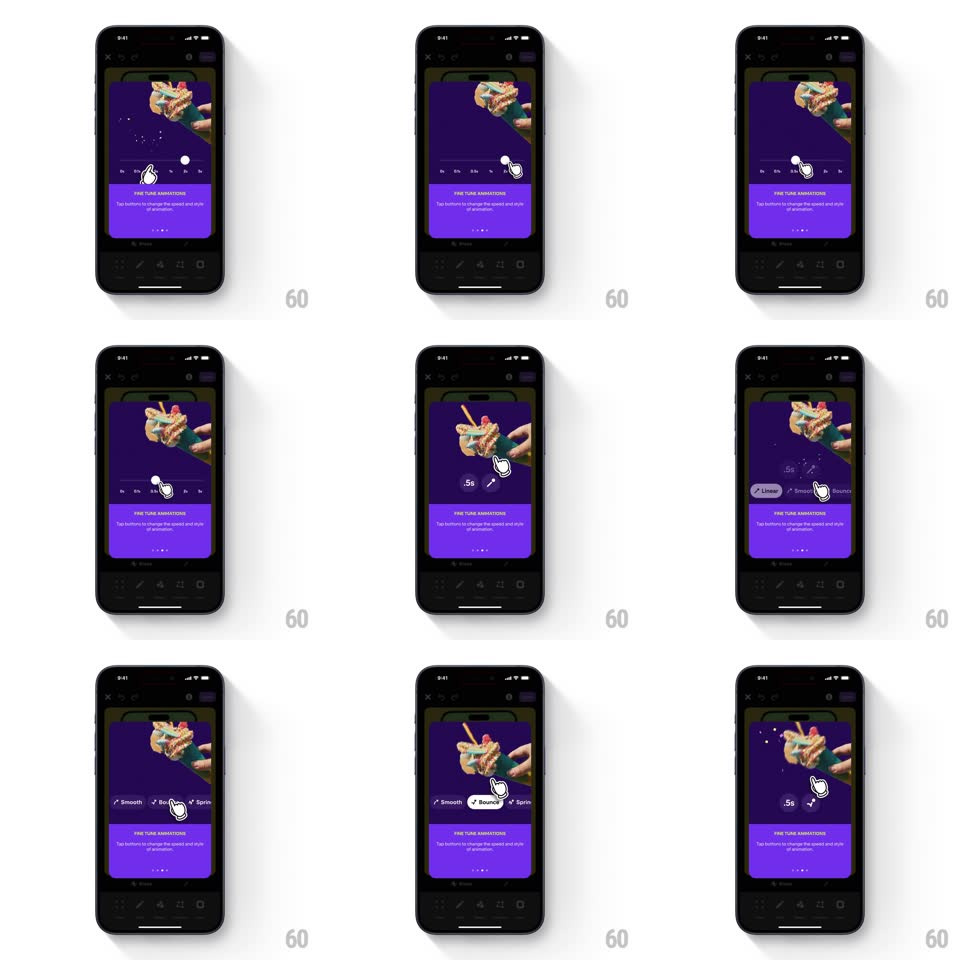

Media
Frame-by-frame

Rebuild this interaction 1:1: Shuffles' fine-tune animations tooltip - the purple coaching card ("FINE TUNE ANIMATIONS - Tap buttons to change the speed and style of animation") demos the controls: a finger taps the speed pills, the buttons morph into a slider, style chips spring in, and confetti bursts on selection.

Rebuild this interaction 1:1: Shuffles' fine-tune animations tooltip - the purple coaching card ("FINE TUNE ANIMATIONS - Tap buttons to change the speed and style of animation") demos the controls: a finger taps the speed pills, the buttons morph into a slider, style chips spring in, and confetti bursts on selection.
## Integration
Integration: stack-agnostic spec - springs given as stiffness/damping, timed motions as duration + curve; map every value to your framework and animation library of choice.
## Scene
The dark animator canvas (a collage of toy figures) behind a purple card at the bottom. Inside the demo area: a row of speed pills (2s, 4s, 6s, 8s) with a wand icon, and below it a style chip row (Smooth, Bouncy, Spring) - Bouncy carries the checkmark when active.
## Motion spec
Pattern: auto-playing control morph demo.
- A white finger cursor glides to the speed pill row and taps (press scale 0.85, 120ms); the tapped pill highlights.
- The pill row morphs into a continuous slider: pills stretch and blend into a track with a thumb (300ms, spring ~380/20) - the finger drags the thumb slightly.
- Below, the style chips spring in one at a time (scale 0.5 -> 1, spring ~450/17, 250ms, staggered 90ms).
- The finger taps "Bouncy": the chip checks with a pop (scale 1 -> 1.15 -> 1) and a small confetti burst fires from it (12-16 tiny pieces, 500ms).
- The collage above previews the choice - the figures replay their animation at the new speed/style.
- The whole demo loops with a 1.2s rest between cycles.
## Calibration
- The morph (pills -> slider) is the centerpiece - give it the spring, keep everything else simple.
- Confetti is small and quick - punctuation, not celebration.
## Reduced motion
Static frame: slider shown, Bouncy checked.
## Don't miss
- The wand icon sits at the left of the speed row - the "magic" affordance.
- The checkmark draws itself on (stroke animation, 200ms) when a chip is picked.